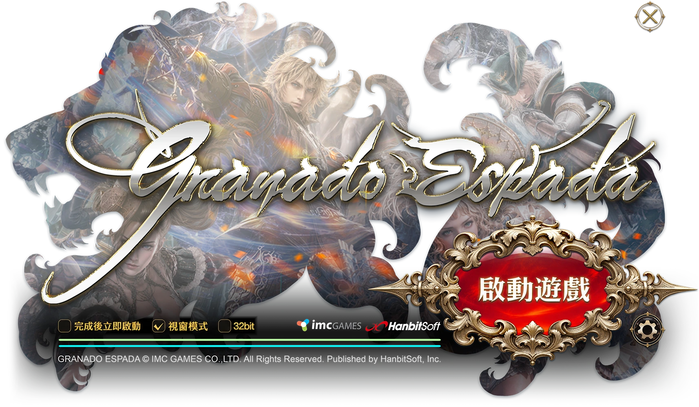
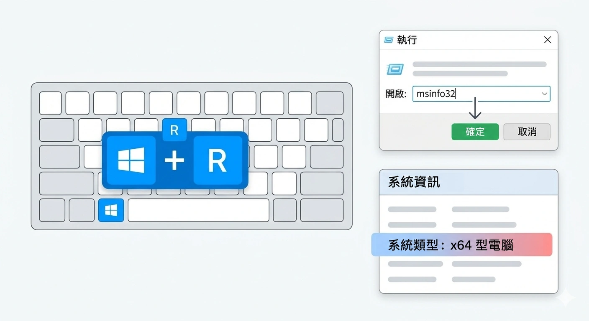

用戶端與伺服器邁向 64 位元，
以及下一步的 DirectX 12
大家好，我們是《Granado Espada》開發團隊。
為了讓各位家族今後也能長久、順暢地遊玩 GE，我們正在更新遊戲的技術基礎。這篇開發者筆記將介紹本次大規模效能優化的內容，從用戶端與伺服器轉為 64 位元，談到接下來準備導入的 DirectX 12。
完成優化的 64 位元用戶端，預計於 11 月 26 日首度在韓版正式伺服器推出。以下透過開發版本的實測數據，帶各位看看實際差異。
為什麼要轉為 64 位元？
GE 開發之初，32 位元程式是主流。受架構限制，32 位元程式可使用的記憶體位址空間上限為 4 GB。如今配備 16 GB、32 GB 甚至更多記憶體的電腦已很常見，但無論電腦裝了多少，32 位元用戶端最多只能使用其中的 4 GB。
透過 GE 核心的多角色操控（MCC）長時間維持「偵查攻擊」，或在眾多家族齊聚一處的團隊副本中，尤其容易碰到這個上限。即使電腦還有可用記憶體，遊戲仍可能因記憶體不足而關閉，大多就是這個緣故。我們也深知，玩了好一段時間卻突然跳出遊戲，給各位帶來多少困擾。
為了從根本解決記憶體限制造成的閃退，讓 GE 玩起來更順暢、更穩定，我們決定將伺服器與用戶端一併轉為 64 位元。
轉為 64 位元的同時，我們也優化了多個環節。以下列出玩家能直接感受到的改變，以及在開發版本中測得的數據。
1. 減少閃退
最大的改變是穩定性。64 位元用戶端可以依需要使用電腦上的記憶體，突破原有的 4 GB 上限。長時間使用偵查攻擊，或與眾多家族一同挑戰團隊副本時，因記憶體不足而跳出遊戲的情況都會大幅減少。
2. 縮短切換地圖的載入時間
移動到其他地區時，遊戲會預先載入下一區的地圖與角色資料。我們改善了這道程序。64 位元用戶端還能利用更充裕的記憶體，快取已載入的圖像與地形，再次造訪同一區域時，載入時間會更短。
| 地圖載入時間 | 現行版本 32 位元 | 11 月 26 日預計推出 64 位元 |
|---|---|---|
| 城鎮 → 城鎮（最長） | 6.6 秒 | 1.0 秒 |
| 城鎮 → 城鎮（平均） | 3.4 秒 | 0.5 秒 |
| 立普圖衛 → 古代波爾圖斯 | 3.1 秒 | 1.4 秒 |
3. 提升戰鬥時的畫面更新率
我們特別針對大量角色同時參戰時的運算負荷進行優化，改善背景介面資料的處理方式與角色動畫的運算架構，大幅減輕 CPU 負擔。下表列出各種情境的平均每秒影格數（FPS），以及負荷最重時的最低 FPS。
| 測試情境 | 現行版本 32 位元 | 11 月 26 日預計推出 64 位元 |
|---|---|---|
| 大規模戰鬥（平均） | 39 FPS | 86 FPS |
| 大規模戰鬥（最低） | 7 FPS | 55 FPS |
| 城鎮待機（平均） | 68 FPS | 137 FPS |
| 野外狩獵（平均） | 105 FPS | 146 FPS |
下一步：DirectX 12
繼 64 位元轉換之後，我們也著手將繪圖方式從 DirectX 9 升級至 DirectX 12。使用 DirectX 9 時，送往顯示卡的繪圖指令實際上須由單一 CPU 核心處理。DirectX 12 可以將這項工作分配給多個核心，更能發揮多核心處理器的效能。
我們正配合 DirectX 12 的轉換，讓整個用戶端逐步採用多核心處理，目標是減少大量角色與特效同時湧入畫面時的掉幀。下方影片比較眾多家族在同一地點交戰時，現行用戶端與開發中 DirectX 12 用戶端的表現。
| 大規模戰鬥 | 現行版本 32 位元／DX9 | 11 月 26 日預計推出 64 位元／DX9 | 開發中 64 位元／DX12 |
|---|---|---|---|
| 平均 | 39 FPS | 86 FPS | 107 FPS |
| 最低 | 7 FPS | 55 FPS | 84 FPS |
從 11 月 26 日的 64 位元更新開始，各位就能感受到大部分的大規模戰鬥效能提升。DirectX 12 將在這個基礎上進一步提高平均與最低 FPS，讓大量家族聚集時畫面也能保持穩定。DirectX 12 的推出時程確定後，我們會另行公告。
更新方式
11 月 20 日將先在韓版測試伺服器套用地圖載入與 FPS 等用戶端優化，針對不同電腦環境進行最後的相容性檢查。接著預計在 11 月 26 日，讓完成優化的 64 位元用戶端與伺服器一同在韓版正式服亮相。屆時 64 位元用戶端仍使用 DirectX 9 繪圖。
若正式服的更新時程有所調整，我們會提前公告。
使用 64 位元作業系統的玩家，更新啟動器後就會自動執行 64 位元用戶端，無須重新安裝遊戲。如果無法啟動或遇到問題，可以在啟動器勾選「32bit」，再啟動原有的 32 位元用戶端。使用 32 位元作業系統的玩家則會和以前一樣，以 32 位元用戶端執行遊戲。

常見問題
需要移除遊戲並重新安裝嗎？
不用。啟動器會自動下載更新所需的檔案。由於首次更新要下載 64 位元版檔案，這一次的下載量可能比平常大。
怎麼確認我的電腦是否使用 64 位元作業系統？
- 按 Windows 標誌鍵 + R 開啟「執行」，輸入
msinfo32，再按 Enter。 - 在「系統資訊」視窗右側找到「系統類型」，查看顯示的是「x64 型電腦」（64 位元）或「x86 型電腦」（32 位元）。
這個指令適用於 Windows 7、8、10 和 11，畫面配置也大致相同。

32 位元用戶端也會改善嗎？
會。預先載入和 FPS 的優化也會套用至 32 位元用戶端。至於突破 4 GB 記憶體上限，以及快取載入過的資料以縮短再次載入的時間，則是 64 位元用戶端才有的改善。
32 位元用戶端還可以用到什麼時候？
目前會同時支援 32 位元與 64 位元用戶端，使用 32 位元作業系統的家族仍可照常遊玩。待 64 位元用戶端的穩定性得到充分驗證、確認不會影響遊玩後，我們才會提前公告全面轉換至 64 位元的時程，並預留充足的過渡期。
為什麼工作管理員顯示遊戲比以前更占記憶體？
64 位元用戶端會運用較充裕的記憶體，保留已載入的地形與圖像資料。因此，工作管理員上顯示的記憶體使用量可能比以前高。這是為了縮短再次進入同一區域時的載入時間，屬於正常運作，請安心遊玩。
這次轉為 64 位元，是一項更換整個遊戲技術基礎的大工程。11 月 20 日至 12 月 5 日也將舉辦 64 位元用戶端體驗問卷活動，詳情會透過公告說明。我們會逐一閱讀各位家族的意見，持續完善這次更新。
11 月 26 日，期待與各位在更順暢的 GE 再會。
謝謝大家。